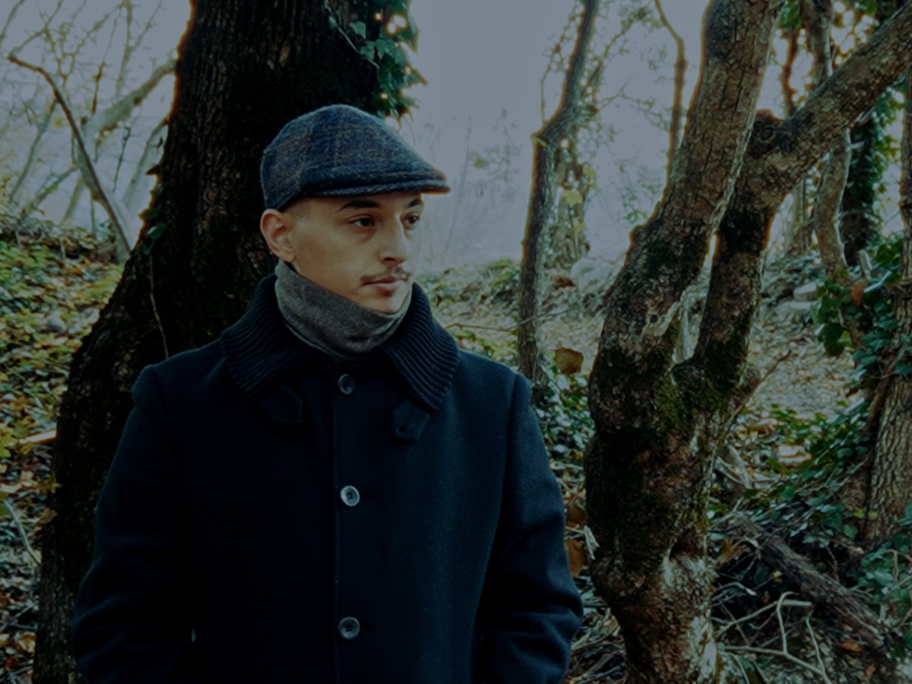
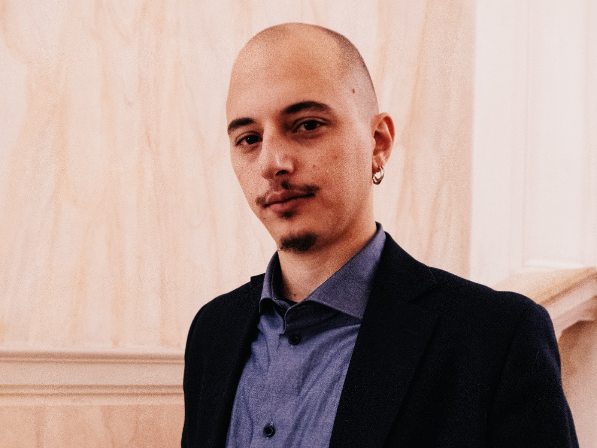
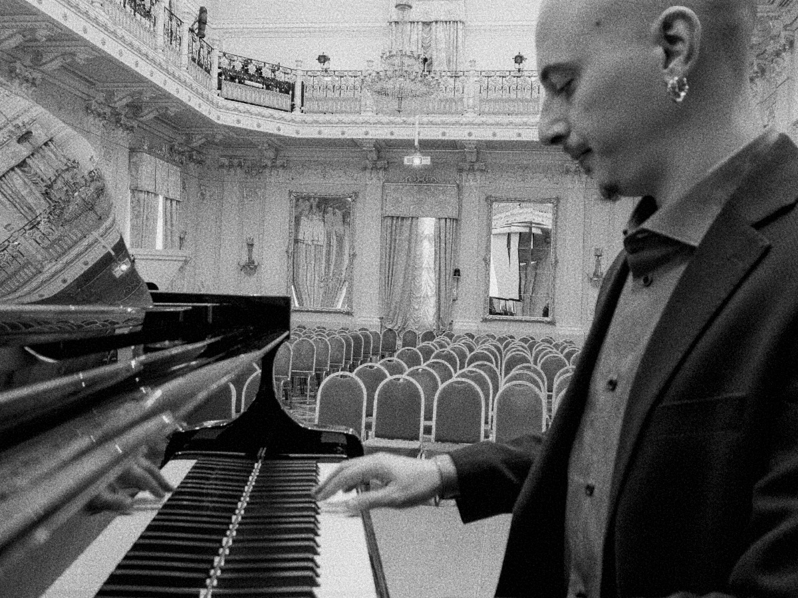

Mauro Spanò - Biography
Mauro Spanò is a pianist and composer originally from Trapani (Sicily), currently active in Trentino-Alto Adige. Since childhood, he has shown a deep fascination for art in all its forms, developing a strong inclination for music applied to images. Convinced that music linked to the visual dimension possesses a unique evocative power, capable of touching the deepest chords of consciousness, Mauro writes by translating reality – or his perception of it – into a highly personal visual narrative.
Growing up in a family of musicians, he breathed classical music from an early age, although his academic journey later took a different path. In 2019, he graduated with top marks and honors with a Master's Degree in Jazz Piano from the Conservatory of Vicenza. Jazz represents an unconditional love to which he completely dedicates himself: with the RAME quintet and other ensembles, he explores this music in all its nuances, from mainstream swing to contemporary jazz and radical improvisation. This research path has led him to perform in prestigious concert venues, both in Italy and abroad, and to win awards in various national and international competitions.
The pandemic period marked a turning point, pushing him towards new expressive territories. He approached electronic music and started collaborations with well-known personalities in online entertainment. In a path far from his habits, he found himself playing pop music in gaming-related events, even becoming a collectible card for a set distributed throughout Italy. Surreal experiences that did not scratch his compositional urgency, but broke down a perhaps overly self-referential vision that the world of pure research sometimes brings with it.
If in the past he tended to consider complexity as an absolute value, immersion in such a specular context sparked a new sensitivity in him: attention to the listener's experience. Aware that the artwork does not end on stage but is fulfilled in the emotion of those who receive it, Spanò transforms his research into the challenge of creating formulas capable of shortening distances, offering deep yet open music, capable of welcoming and dialoguing with the audience.
Today, although improvisation remains an indispensable expressive tool for him, writing is the dimension that completes him the most, in which the limit of the written page transforms into a perimeter of safety, intimacy, and absolute creative freedom.



Education
- Master's Degree in Musical Disciplines - Jazz Piano (Conservatory of Vicenza) – 110/110 cum Laude
- Bachelor's Degree in Jazz Piano (Conservatory of Vicenza) – 110/110
- Courses and advanced research Masterclasses with: Paolo Birro, Pietro Tonolo, Salvatore Maiore, Mauro Beggio, Michele Calgaro, Giampaolo Casati, Roberto Dani, Stefano Battaglia, Kevin Hays, Marco Tamburini.
Competitions
- First Absolute Prize at the National Competition "Chicco Bettinardi" of Piacenza, 2019 edition
- First Absolute Prize at the International Competition "Giovani Musicisti" of Treviso
- First Prize Tomorrow's Jazz Award 2021 organized by Veneto Jazz, Teatro La Fenice
- Third Prize at the International Competition "JazzJuniors" in Krakow (Poland)
- Finalist at the International Competition "EuropaFest" in Bucharest (Romania)
- Finalist at the National Festival of Conservatories in Frosinone
Concerts
He has performed live both as a solo pianist and with various ensembles in Italy and abroad:
- Teatro Olimpico - Vicenza
- Teatro La Fenice (Sale Apollinee) - Venezia
- Nis Jazz Festival - Serbia
- Bucharest Jazz Festival - Romania
- ICE Kraków Congress Centre - Poland
- Casa Del Jazz - Roma
- Teatro Comunale - Vicenza
- Teatro Comunale - Ferrara
- Palazzina Marfisa D'Este - Ferrara